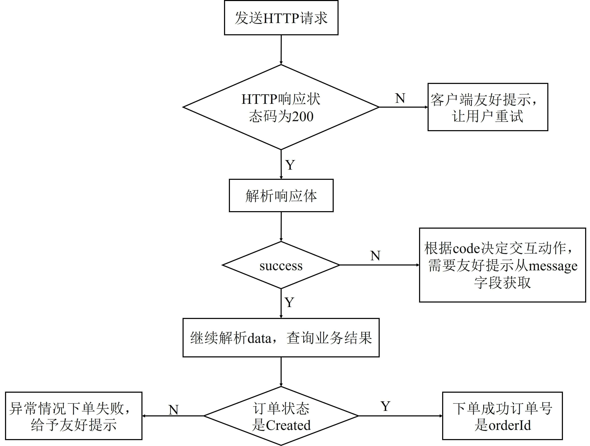
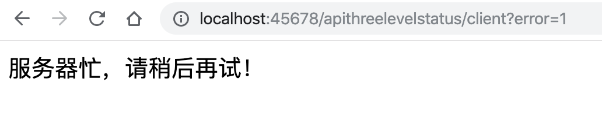
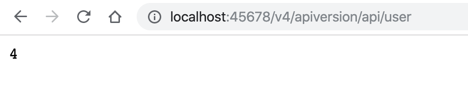
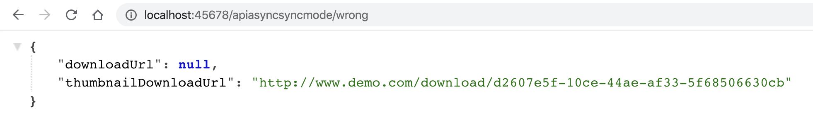

- 00 开篇词 业务代码真的会有这么多坑？.md.html
- 01 使用了并发工具类库，线程安全就高枕无忧了吗？.md.html
- 02 代码加锁：不要让“锁”事成为烦心事.md.html
- 03 线程池：业务代码最常用也最容易犯错的组件.md.html
- 04 连接池：别让连接池帮了倒忙.md.html
- 05 HTTP调用：你考虑到超时、重试、并发了吗？.md.html
- 06 2成的业务代码的Spring声明式事务，可能都没处理正确.md.html
- 07 数据库索引：索引并不是万能药.md.html
- 08 判等问题：程序里如何确定你就是你？.md.html
- 09 数值计算：注意精度、舍入和溢出问题.md.html
- 10 集合类：坑满地的List列表操作.md.html
- 11 空值处理：分不清楚的null和恼人的空指针.md.html
- 12 异常处理：别让自己在出问题的时候变为瞎子.md.html
- 13 日志：日志记录真没你想象的那么简单.md.html
- 14 文件IO：实现高效正确的文件读写并非易事.md.html
- 15 序列化：一来一回你还是原来的你吗？.md.html
- 16 用好Java 8的日期时间类，少踩一些“老三样”的坑.md.html
- 17 别以为“自动挡”就不可能出现OOM.md.html
- 18 当反射、注解和泛型遇到OOP时，会有哪些坑？.md.html
- 19 Spring框架：IoC和AOP是扩展的核心.md.html
- 20 Spring框架：框架帮我们做了很多工作也带来了复杂度.md.html
- 21 代码重复：搞定代码重复的三个绝招.md.html
- 22 接口设计：系统间对话的语言，一定要统一.md.html
- 23 缓存设计：缓存可以锦上添花也可以落井下石.md.html
- 24 业务代码写完，就意味着生产就绪了？.md.html
- 25 异步处理好用，但非常容易用错.md.html
- 26 数据存储：NoSQL与RDBMS如何取长补短、相辅相成？.md.html
- 27 数据源头：任何客户端的东西都不可信任.md.html
- 28 安全兜底：涉及钱时，必须考虑防刷、限量和防重.md.html
- 29 数据和代码：数据就是数据，代码就是代码.md.html
- 30 如何正确保存和传输敏感数据？.md.html
- 31 加餐1：带你吃透课程中Java 8的那些重要知识点（一）.md.html
- 32 加餐2：带你吃透课程中Java 8的那些重要知识点（二）.md.html
- 33 加餐3：定位应用问题，排错套路很重要.md.html
- 34 加餐4：分析定位Java问题，一定要用好这些工具（一）.md.html
- 35 加餐5：分析定位Java问题，一定要用好这些工具（二）.md.html
- 36 加餐6：这15年来，我是如何在工作中学习技术和英语的？.md.html
- 37 加餐7：程序员成长28计.md.html
- 38 加餐8：Java程序从虚拟机迁移到Kubernetes的一些坑.md.html
- 答疑篇：代码篇思考题集锦（一）.md.html
- 答疑篇：代码篇思考题集锦（三）.md.html
- 答疑篇：代码篇思考题集锦（二）.md.html
- 答疑篇：加餐篇思考题答案合集.md.html
- 答疑篇：安全篇思考题答案合集.md.html
- 答疑篇：设计篇思考题答案合集.md.html
- 结束语 写代码时，如何才能尽量避免踩坑？.md.html
22 接口设计：系统间对话的语言，一定要统一
你好，我是朱晔。今天，我要和你分享的主题是，在做接口设计时一定要确保系统之间对话的语言是统一的。
我们知道，开发一个服务的第一步就是设计接口。接口的设计需要考虑的点非常多，比如接口的命名、参数列表、包装结构体、接口粒度、版本策略、幂等性实现、同步异步处理方式等。
这其中，和接口设计相关比较重要的点有三个，分别是包装结构体、版本策略、同步异步处理方式。今天，我就通过我遇到的实际案例，和你一起看看因为接口设计思路和调用方理解不一致所导致的问题，以及相关的实践经验。
接口的响应要明确表示接口的处理结果
我曾遇到过一个处理收单的收单中心项目，下单接口返回的响应体中，包含了 success、code、info、message 等属性，以及二级嵌套对象 data 结构体。在对项目进行重构的时候，我们发现真的是无从入手，接口缺少文档，代码一有改动就出错。
有时候，下单操作的响应结果是这样的：success 是 true、message 是 OK，貌似代表下单成功了；但 info 里却提示订单存在风险，code 是一个 5001 的错误码，data 中能看到订单状态是 Cancelled，订单 ID 是 -1，好像又说明没有下单成功。
{
"success": true,
"code": 5001,
"info": "Risk order detected",
"message": "OK",
"data": {
"orderStatus": "Cancelled",
"orderId": -1
}
}
有些时候，这个下单接口又会返回这样的结果：success 是 false，message 提示非法用户 ID，看上去下单失败；但 data 里的 orderStatus 是 Created、info 是空、code 是 0。那么，这次下单到底是成功还是失败呢？
{
"success": false,
"code": 0,
"info": "",
"message": "Illegal userId",
"data": {
"orderStatus": "Created",
"orderId": 0
}
}
这样的结果，让我们非常疑惑：
结构体的 code 和 HTTP 响应状态码，是什么关系？
success 到底代表下单成功还是失败？
info 和 message 的区别是什么？
data 中永远都有数据吗？什么时候应该去查询 data？
造成如此混乱的原因是：这个收单服务本身并不真正处理下单操作，只是做一些预校验和预处理；真正的下单操作，需要在收单服务内部调用另一个订单服务来处理；订单服务处理完成后，会返回订单状态和 ID。
在一切正常的情况下，下单后的订单状态就是已创建 Created，订单 ID 是一个大于 0 的数字。而结构体中的 message 和 success，其实是收单服务的处理异常信息和处理成功与否的结果，code、info 是调用订单服务的结果。
对于第一次调用，收单服务自己没问题，success 是 true，message 是 OK，但调用订单服务时却因为订单风险问题被拒绝，所以 code 是 5001，info 是 Risk order detected，data 中的信息是订单服务返回的，所以最终订单状态是 Cancelled。
对于第二次调用，因为用户 ID 非法，所以收单服务在校验了参数后直接就返回了 success 是 false，message 是 Illegal userId。因为请求没有到订单服务，所以 info、code、data 都是默认值，订单状态的默认值是 Created。因此，第二次下单肯定失败了，但订单状态却是已创建。
可以看到，如此混乱的接口定义和实现方式，是无法让调用者分清到底应该怎么处理的。为了将接口设计得更合理，我们需要考虑如下两个原则：
对外隐藏内部实现。虽然说收单服务调用订单服务进行真正的下单操作，但是直接接口其实是收单服务提供的，收单服务不应该“直接”暴露其背后订单服务的状态码、错误描述。
设计接口结构时，明确每个字段的含义，以及客户端的处理方式。
基于这两个原则，我们调整一下返回结构体，去掉外层的 info，即不再把订单服务的调用结果告知客户端：
@Data
public class APIResponse<T> {
private boolean success;
private T data;
private int code;
private String message;
}
并明确接口的设计逻辑：
如果出现非 200 的 HTTP 响应状态码，就代表请求没有到收单服务，可能是网络出问题、网络超时，或者网络配置的问题。这时，肯定无法拿到服务端的响应体，客户端可以给予友好提示，比如让用户重试，不需要继续解析响应结构体。
如果 HTTP 响应码是 200，解析响应体查看 success，为 false 代表下单请求处理失败，可能是因为收单服务参数验证错误，也可能是因为订单服务下单操作失败。这时，根据收单服务定义的错误码表和 code，做不同处理。比如友好提示，或是让用户重新填写相关信息，其中友好提示的文字内容可以从 message 中获取。
success 为 true 的情况下，才需要继续解析响应体中的 data 结构体。data 结构体代表了业务数据，通常会有下面两种情况。
通常情况下，success 为 true 时订单状态是 Created，获取 orderId 属性可以拿到订单号。
特殊情况下，比如收单服务内部处理不当，或是订单服务出现了额外的状态，虽然 success 为 true，但订单实际状态不是 Created，这时可以给予友好的错误提示。

明确了接口的设计逻辑，我们就是可以实现收单服务的服务端和客户端来模拟这些情况了。
首先，实现服务端的逻辑：
@GetMapping("server")
public APIResponse<OrderInfo> server(@RequestParam("userId") Long userId) {
APIResponse<OrderInfo> response = new APIResponse<>();
if (userId == null) {
//对于userId为空的情况，收单服务直接处理失败，给予相应的错误码和错误提示
response.setSuccess(false);
response.setCode(3001);
response.setMessage("Illegal userId");
} else if (userId == 1) {
//对于userId=1的用户，模拟订单服务对于风险用户的情况
response.setSuccess(false);
//把订单服务返回的错误码转换为收单服务错误码
response.setCode(3002);
response.setMessage("Internal Error, order is cancelled");
//同时日志记录内部错误
log.warn("用户 {} 调用订单服务失败，原因是 Risk order detected", userId);
} else {
//其他用户，下单成功
response.setSuccess(true);
response.setCode(2000);
response.setMessage("OK");
response.setData(new OrderInfo("Created", 2L));
}
return response;
}
客户端代码，则可以按照流程图上的逻辑来实现，同样模拟三种出错情况和正常下单的情况：
error==1 的用例模拟一个不存在的 URL，请求无法到收单服务，会得到 404 的 HTTP 状态码，直接进行友好提示，这是第一层处理。

error==2 的用例模拟 userId 参数为空的情况，收单服务会因为缺少 userId 参数提示非法用户。这时，可以把响应体中的 message 展示给用户，这是第二层处理。
error==3 的用例模拟 userId 为 1 的情况，因为用户有风险，收单服务调用订单服务出错。处理方式和之前没有任何区别，因为收单服务会屏蔽订单服务的内部错误。
但在服务端可以看到如下错误信息：
[14:13:13.951] [http-nio-45678-exec-8] [WARN ] [.c.a.d.APIThreeLevelStatusController:36 ] - 用户 1 调用订单服务失败，原因是 Risk order detected
error==0 的用例模拟正常用户，下单成功。这时可以解析 data 结构体提取业务结果，作为兜底，需要判断订单状态，如果不是 Created 则给予友好提示，否则查询 orderId 获得下单的订单号，这是第三层处理。
客户端的实现代码如下：
@GetMapping("client")
public String client(@RequestParam(value = "error", defaultValue = "0") int error) {
String url = Arrays.asList("http://localhost:45678/apiresposne/server?userId=2",
"http://localhost:45678/apiresposne/server2",
"http://localhost:45678/apiresposne/server?userId=",
"http://localhost:45678/apiresposne/server?userId=1").get(error);
//第一层，先看状态码，如果状态码不是200，不处理响应体
String response = "";
try {
response = Request.Get(url).execute().returnContent().asString();
} catch (HttpResponseException e) {
log.warn("请求服务端出现返回非200", e);
return "服务器忙，请稍后再试！";
} catch (IOException e) {
e.printStackTrace();
}
//状态码为200的情况下处理响应体
if (!response.equals("")) {
try {
APIResponse<OrderInfo> apiResponse = objectMapper.readValue(response, new TypeReference<APIResponse<OrderInfo>>() {
});
//第二层，success是false直接提示用户
if (!apiResponse.isSuccess()) {
return String.format("创建订单失败，请稍后再试，错误代码： %s 错误原因：%s", apiResponse.getCode(), apiResponse.getMessage());
} else {
//第三层，往下解析OrderInfo
OrderInfo orderInfo = apiResponse.getData();
if ("Created".equals(orderInfo.getStatus()))
return String.format("创建订单成功，订单号是：%s，状态是：%s", orderInfo.getOrderId(), orderInfo.getStatus());
else
return String.format("创建订单失败，请联系客服处理");
}
} catch (JsonProcessingException e) {
e.printStackTrace();
}
}
return "";
}
相比原来混乱的接口定义和处理逻辑，改造后的代码，明确了接口每一个字段的含义，以及对于各种情况服务端的输出和客户端的处理步骤，对齐了客户端和服务端的处理逻辑。那么现在，你能回答前面那 4 个让人疑惑的问题了吗？
最后分享一个小技巧。为了简化服务端代码，我们可以把包装 API 响应体 APIResponse 的工作交由框架自动完成，这样直接返回 DTO OrderInfo 即可。对于业务逻辑错误，可以抛出一个自定义异常：
@GetMapping("server")
public OrderInfo server(@RequestParam("userId") Long userId) {
if (userId == null) {
throw new APIException(3001, "Illegal userId");
}
if (userId == 1) {
...
//直接抛出异常
throw new APIException(3002, "Internal Error, order is cancelled");
}
//直接返回DTO
return new OrderInfo("Created", 2L);
}
在 APIException 中包含错误码和错误消息：
public class APIException extends RuntimeException {
@Getter
private int errorCode;
@Getter
private String errorMessage;
public APIException(int errorCode, String errorMessage) {
super(errorMessage);
this.errorCode = errorCode;
this.errorMessage = errorMessage;
}
public APIException(Throwable cause, int errorCode, String errorMessage) {
super(errorMessage, cause);
this.errorCode = errorCode;
this.errorMessage = errorMessage;
}
}
然后，定义一个 @RestControllerAdvice 来完成自动包装响应体的工作：
通过实现 ResponseBodyAdvice 接口的 beforeBodyWrite 方法，来处理成功请求的响应体转换。
实现一个 @ExceptionHandler 来处理业务异常时，APIException 到 APIResponse 的转换。
//此段代码只是Demo，生产级应用还需要扩展很多细节
@RestControllerAdvice
@Slf4j
public class APIResponseAdvice implements ResponseBodyAdvice<Object> {
//自动处理APIException，包装为APIResponse
@ExceptionHandler(APIException.class)
public APIResponse handleApiException(HttpServletRequest request, APIException ex) {
log.error("process url {} failed", request.getRequestURL().toString(), ex);
APIResponse apiResponse = new APIResponse();
apiResponse.setSuccess(false);
apiResponse.setCode(ex.getErrorCode());
apiResponse.setMessage(ex.getErrorMessage());
return apiResponse;
}
//仅当方法或类没有标记@NoAPIResponse才自动包装
@Override
public boolean supports(MethodParameter returnType, Class converterType) {
return returnType.getParameterType() != APIResponse.class
&& AnnotationUtils.findAnnotation(returnType.getMethod(), NoAPIResponse.class) == null
&& AnnotationUtils.findAnnotation(returnType.getDeclaringClass(), NoAPIResponse.class) == null;
}
//自动包装外层APIResposne响应
@Override
public Object beforeBodyWrite(Object body, MethodParameter returnType, MediaType selectedContentType, Class<? extends HttpMessageConverter<?>> selectedConverterType, ServerHttpRequest request, ServerHttpResponse response) {
APIResponse apiResponse = new APIResponse();
apiResponse.setSuccess(true);
apiResponse.setMessage("OK");
apiResponse.setCode(2000);
apiResponse.setData(body);
return apiResponse;
}
}
在这里，我们实现了一个 @NoAPIResponse 自定义注解。如果某些 @RestController 的接口不希望实现自动包装的话，可以标记这个注解：
@Target({ElementType.METHOD, ElementType.TYPE})
@Retention(RetentionPolicy.RUNTIME)
public @interface NoAPIResponse {
}
在 ResponseBodyAdvice 的 support 方法中，我们排除了标记有这个注解的方法或类的自动响应体包装。比如，对于刚才我们实现的测试客户端 client 方法不需要包装为 APIResponse，就可以标记上这个注解：
@GetMapping("client")
@NoAPIResponse
public String client(@RequestParam(value = "error", defaultValue = "0") int error)
这样我们的业务逻辑中就不需要考虑响应体的包装，代码会更简洁。
要考虑接口变迁的版本控制策略
接口不可能一成不变，需要根据业务需求不断增加内部逻辑。如果做大的功能调整或重构，涉及参数定义的变化或是参数废弃，导致接口无法向前兼容，这时接口就需要有版本的概念。在考虑接口版本策略设计时，我们需要注意的是，最好一开始就明确版本策略，并考虑在整个服务端统一版本策略。
第一，版本策略最好一开始就考虑。
既然接口总是要变迁的，那么最好一开始就确定版本策略。比如，确定是通过 URL Path 实现，是通过 QueryString 实现，还是通过 HTTP 头实现。这三种实现方式的代码如下：
//通过URL Path实现版本控制
@GetMapping("/v1/api/user")
public int right1(){
return 1;
}
//通过QueryString中的version参数实现版本控制
@GetMapping(value = "/api/user", params = "version=2")
public int right2(@RequestParam("version") int version) {
return 2;
}
//通过请求头中的X-API-VERSION参数实现版本控制
@GetMapping(value = "/api/user", headers = "X-API-VERSION=3")
public int right3(@RequestHeader("X-API-VERSION") int version) {
return 3;
}
这样，客户端就可以在配置中处理相关版本控制的参数，有可能实现版本的动态切换。
这三种方式中，URL Path 的方式最直观也最不容易出错；QueryString 不易携带，不太推荐作为公开 API 的版本策略；HTTP 头的方式比较没有侵入性，如果仅仅是部分接口需要进行版本控制，可以考虑这种方式。
第二，版本实现方式要统一。
之前，我就遇到过一个 O2O 项目，需要针对商品、商店和用户实现 REST 接口。虽然大家约定通过 URL Path 方式实现 API 版本控制，但实现方式不统一，有的是 /api/item/v1，有的是 /api/v1/shop，还有的是 /v1/api/merchant：
@GetMapping("/api/item/v1")
public void wrong1(){
}
@GetMapping("/api/v1/shop")
public void wrong2(){
}
@GetMapping("/v1/api/merchant")
public void wrong3(){
}
显然，商品、商店和商户的接口开发同学，没有按照一致的 URL 格式来实现接口的版本控制。更要命的是，我们可能开发出两个 URL 类似接口，比如一个是 /api/v1/user，另一个是 /api/user/v1，这到底是一个接口还是两个接口呢？
相比于在每一个接口的 URL Path 中设置版本号，更理想的方式是在框架层面实现统一。如果你使用 Spring 框架的话，可以按照下面的方式自定义 RequestMappingHandlerMapping 来实现。
首先，创建一个注解来定义接口的版本。@APIVersion 自定义注解可以应用于方法或 Controller 上：
@Target({ElementType.METHOD, ElementType.TYPE})
@Retention(RetentionPolicy.RUNTIME)
public @interface APIVersion {
String[] value();
}
然后，定义一个 APIVersionHandlerMapping 类继承 RequestMappingHandlerMapping。
RequestMappingHandlerMapping 的作用，是根据类或方法上的 @RequestMapping 来生成 RequestMappingInfo 的实例。我们覆盖 registerHandlerMethod 方法的实现，从 @APIVersion 自定义注解中读取版本信息，拼接上原有的、不带版本号的 URL Pattern，构成新的 RequestMappingInfo，来通过注解的方式为接口增加基于 URL 的版本号：
public class APIVersionHandlerMapping extends RequestMappingHandlerMapping {
@Override
protected boolean isHandler(Class<?> beanType) {
return AnnotatedElementUtils.hasAnnotation(beanType, Controller.class);
}
@Override
protected void registerHandlerMethod(Object handler, Method method, RequestMappingInfo mapping) {
Class<?> controllerClass = method.getDeclaringClass();
//类上的APIVersion注解
APIVersion apiVersion = AnnotationUtils.findAnnotation(controllerClass, APIVersion.class);
//方法上的APIVersion注解
APIVersion methodAnnotation = AnnotationUtils.findAnnotation(method, APIVersion.class);
//以方法上的注解优先
if (methodAnnotation != null) {
apiVersion = methodAnnotation;
}
String[] urlPatterns = apiVersion == null ? new String[0] : apiVersion.value();
PatternsRequestCondition apiPattern = new PatternsRequestCondition(urlPatterns);
PatternsRequestCondition oldPattern = mapping.getPatternsCondition();
PatternsRequestCondition updatedFinalPattern = apiPattern.combine(oldPattern);
//重新构建RequestMappingInfo
mapping = new RequestMappingInfo(mapping.getName(), updatedFinalPattern, mapping.getMethodsCondition(),
mapping.getParamsCondition(), mapping.getHeadersCondition(), mapping.getConsumesCondition(),
mapping.getProducesCondition(), mapping.getCustomCondition());
super.registerHandlerMethod(handler, method, mapping);
}
}
最后，也是特别容易忽略的一点，要通过实现 WebMvcRegistrations 接口，来生效自定义的 APIVersionHandlerMapping：
@SpringBootApplication
public class CommonMistakesApplication implements WebMvcRegistrations {
...
@Override
public RequestMappingHandlerMapping getRequestMappingHandlerMapping() {
return new APIVersionHandlerMapping();
}
}
这样，就实现了在 Controller 上或接口方法上通过注解，来实现以统一的 Pattern 进行版本号控制：
@GetMapping(value = "/api/user")
@APIVersion("v4")
public int right4() {
return 4;
}
加上注解后，访问浏览器查看效果：

使用框架来明确 API 版本的指定策略，不仅实现了标准化，更实现了强制的 API 版本控制。对上面代码略做修改，我们就可以实现不设置 @APIVersion 接口就给予报错提示。
接口处理方式要明确同步还是异步
看到这个标题，你可能感觉不太好理解，我们直接看一个实际案例吧。
有一个文件上传服务 FileService，其中一个 upload 文件上传接口特别慢，原因是这个上传接口在内部需要进行两步操作，首先上传原图，然后压缩后上传缩略图。如果每一步都耗时 5 秒的话，那么这个接口返回至少需要 10 秒的时间。
于是，开发同学把接口改为了异步处理，每一步操作都限定了超时时间，也就是分别把上传原文件和上传缩略图的操作提交到线程池，然后等待一定的时间：
private ExecutorService threadPool = Executors.newFixedThreadPool(2);
//我没有贴出两个文件上传方法uploadFile和uploadThumbnailFile的实现，它们在内部只是随机进行休眠然后返回文件名，对于本例来说不是很重要
public UploadResponse upload(UploadRequest request) {
UploadResponse response = new UploadResponse();
//上传原始文件任务提交到线程池处理
Future<String> uploadFile = threadPool.submit(() -> uploadFile(request.getFile()));
//上传缩略图任务提交到线程池处理
Future<String> uploadThumbnailFile = threadPool.submit(() -> uploadThumbnailFile(request.getFile()));
//等待上传原始文件任务完成，最多等待1秒
try {
response.setDownloadUrl(uploadFile.get(1, TimeUnit.SECONDS));
} catch (Exception e) {
e.printStackTrace();
}
//等待上传缩略图任务完成，最多等待1秒
try {
response.setThumbnailDownloadUrl(uploadThumbnailFile.get(1, TimeUnit.SECONDS));
} catch (Exception e) {
e.printStackTrace();
}
return response;
}
上传接口的请求和响应比较简单，传入二进制文件，传出原文件和缩略图下载地址：
@Data
public class UploadRequest {
private byte[] file;
}
@Data
public class UploadResponse {
private String downloadUrl;
private String thumbnailDownloadUrl;
}
到这里，你能看出这种实现方式的问题是什么吗？
从接口命名上看虽然是同步上传操作，但其内部通过线程池进行异步上传，并因为设置了较短超时所以接口整体响应挺快。但是，一旦遇到超时，接口就不能返回完整的数据，不是无法拿到原文件下载地址，就是无法拿到缩略图下载地址，接口的行为变得不可预测：

所以，这种优化接口响应速度的方式并不可取，更合理的方式是，让上传接口要么是彻底的同步处理，要么是彻底的异步处理：
所谓同步处理，接口一定是同步上传原文件和缩略图的，调用方可以自己选择调用超时，如果来得及可以一直等到上传完成，如果等不及可以结束等待，下一次再重试；
所谓异步处理，接口是两段式的，上传接口本身只是返回一个任务 ID，然后异步做上传操作，上传接口响应很快，客户端需要之后再拿着任务 ID 调用任务查询接口查询上传的文件 URL。
同步上传接口的实现代码如下，把超时的选择留给客户端：
public SyncUploadResponse syncUpload(SyncUploadRequest request) {
SyncUploadResponse response = new SyncUploadResponse();
response.setDownloadUrl(uploadFile(request.getFile()));
response.setThumbnailDownloadUrl(uploadThumbnailFile(request.getFile()));
return response;
}
这里的 SyncUploadRequest 和 SyncUploadResponse 类，与之前定义的 UploadRequest 和 UploadResponse 是一致的。对于接口的入参和出参 DTO 的命名，我比较建议的方式是，使用接口名 +Request 和 Response 后缀。
接下来，我们看看异步的上传文件接口如何实现。异步上传接口在出参上有点区别，不再返回文件 URL，而是返回一个任务 ID：
@Data
public class AsyncUploadRequest {
private byte[] file;
}
@Data
public class AsyncUploadResponse {
private String taskId;
}
在接口实现上，我们同样把上传任务提交到线程池处理，但是并不会同步等待任务完成，而是完成后把结果写入一个 HashMap，任务查询接口通过查询这个 HashMap 来获得文件的 URL：
//计数器，作为上传任务的ID
private AtomicInteger atomicInteger = new AtomicInteger(0);
//暂存上传操作的结果，生产代码需要考虑数据持久化
private ConcurrentHashMap<String, SyncQueryUploadTaskResponse> downloadUrl = new ConcurrentHashMap<>();
//异步上传操作
public AsyncUploadResponse asyncUpload(AsyncUploadRequest request) {
AsyncUploadResponse response = new AsyncUploadResponse();
//生成唯一的上传任务ID
String taskId = "upload" + atomicInteger.incrementAndGet();
//异步上传操作只返回任务ID
response.setTaskId(taskId);
//提交上传原始文件操作到线程池异步处理
threadPool.execute(() -> {
String url = uploadFile(request.getFile());
//如果ConcurrentHashMap不包含Key，则初始化一个SyncQueryUploadTaskResponse，然后设置DownloadUrl
downloadUrl.computeIfAbsent(taskId, id -> new SyncQueryUploadTaskResponse(id)).setDownloadUrl(url);
});
//提交上传缩略图操作到线程池异步处理
threadPool.execute(() -> {
String url = uploadThumbnailFile(request.getFile());
downloadUrl.computeIfAbsent(taskId, id -> new SyncQueryUploadTaskResponse(id)).setThumbnailDownloadUrl(url);
});
return response;
}
文件上传查询接口则以任务 ID 作为入参，返回两个文件的下载地址，因为文件上传查询接口是同步的，所以直接命名为 syncQueryUploadTask：
//syncQueryUploadTask接口入参
@Data
@RequiredArgsConstructor
public class SyncQueryUploadTaskRequest {
private final String taskId;//使用上传文件任务ID查询上传结果
}
//syncQueryUploadTask接口出参
@Data
@RequiredArgsConstructor
public class SyncQueryUploadTaskResponse {
private final String taskId; //任务ID
private String downloadUrl; //原始文件下载URL
private String thumbnailDownloadUrl; //缩略图下载URL
}
public SyncQueryUploadTaskResponse syncQueryUploadTask(SyncQueryUploadTaskRequest request) {
SyncQueryUploadTaskResponse response = new SyncQueryUploadTaskResponse(request.getTaskId());
//从之前定义的downloadUrl ConcurrentHashMap查询结果
response.setDownloadUrl(downloadUrl.getOrDefault(request.getTaskId(), response).getDownloadUrl());
response.setThumbnailDownloadUrl(downloadUrl.getOrDefault(request.getTaskId(), response).getThumbnailDownloadUrl());
return response;
}
经过改造的 FileService 不再提供一个看起来是同步上传，内部却是异步上传的 upload 方法，改为提供很明确的：
同步上传接口 syncUpload；
异步上传接口 asyncUpload，搭配 syncQueryUploadTask 查询上传结果。
使用方可以根据业务性质选择合适的方法：如果是后端批处理使用，那么可以使用同步上传，多等待一些时间问题不大；如果是面向用户的接口，那么接口响应时间不宜过长，可以调用异步上传接口，然后定时轮询上传结果，拿到结果再显示。
重点回顾
今天，我针对接口设计，和你深入探讨了三个方面的问题。
第一，针对响应体的设计混乱、响应结果的不明确问题，服务端需要明确响应体每一个字段的意义，以一致的方式进行处理，并确保不透传下游服务的错误。
第二，针对接口版本控制问题，主要就是在开发接口之前明确版本控制策略，以及尽量使用统一的版本控制策略两方面。
第三，针对接口的处理方式，我认为需要明确要么是同步要么是异步。如果 API 列表中既有同步接口也有异步接口，那么最好直接在接口名中明确。
一个良好的接口文档不仅仅需要说明如何调用接口，更需要补充接口使用的最佳实践以及接口的 SLA 标准。我看到的大部分接口文档只给出了参数定义，但诸如幂等性、同步异步、缓存策略等看似内部实现相关的一些设计，其实也会影响调用方对接口的使用策略，最好也可以体现在接口文档中。
最后，我再额外提一下，对于服务端出错的时候是否返回 200 响应码的问题，其实一直有争论。从 RESTful 设计原则来看，我们应该尽量利用 HTTP 状态码来表达错误，但也不是这么绝对。
如果我们认为 HTTP 状态码是协议层面的履约，那么当这个错误已经不涉及 HTTP 协议时（换句话说，服务端已经收到请求进入服务端业务处理后产生的错误），不一定需要硬套协议本身的错误码。但涉及非法 URL、非法参数、没有权限等无法处理请求的情况，还是应该使用正确的响应码来应对。
今天用到的代码，我都放在了 GitHub 上，你可以点击这个链接查看。
思考与讨论
在第一节的例子中，接口响应结构体中的 code 字段代表执行结果的错误码，对于业务特别复杂的接口，可能会有很多错误情况，code 可能会有几十甚至几百个。客户端开发人员需要根据每一种错误情况逐一写 if-else 进行不同交互处理，会非常麻烦，你觉得有什么办法来改进吗？作为服务端，是否有必要告知客户端接口执行的错误码呢？
在第二节的例子中，我们在类或方法上标记 @APIVersion 自定义注解，实现了 URL 方式统一的接口版本定义。你可以用类似的方式（也就是自定义 RequestMappingHandlerMapping），来实现一套统一的基于请求头方式的版本控制吗？
关于接口设计，你还遇到过其他问题吗？我是朱晔，欢迎在评论区与我留言分享你的想法，也欢迎你把今天的内容分享给你的朋友或同事，一起交流。